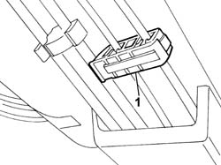
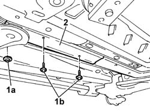
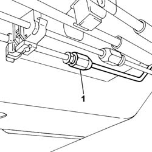

3340B62 rear connection central pipe - r r
- Path
- Procedures > 33 BRAKING SYSTEM > 3340 ANTI-LOCK BRAKE SYSTEM (ABS) > 3340B ABS SYSTEM PIPES > 3340B62 rear connection central pipe - r r
- Kind
- repair procedure (removal / refitting; the operation number is the code)
- Applies to
- all engines; all production periods
- Interactive page
- https://sloeber94.github.io/elrnDB-fPnd/en/#/2752766
Applies to: all engines; all production periods
 Removing
Removing
 Refitting
RefittingPlace the car on a ramp.
3330C34 brake fluid reservoir - r + r and wash inside - versions with r/h drive and abs
5530B56 BATTERY DRIP TRAY COVER - R.R.
5530B52 Battery DRIP TRAY/SUPPORT - R.R.
1048A10 air cleaner filtering element - replace
3330C14 (PUMP) - MASTER CYLINDER .R.R for versions with A.B.S.
3340A12 A'B.S. system. - electronic and hydraulic CONTROL UNIT R.R.
Raise the lift.
1. Open the brake pipe retaining clip

Applies to: all engines; all production periods
1. Undo bolts (1a) and remove retaining clip (1b).
2. Remove the front section of the rigid brake pipe and fuel pipe protection

Applies to: all engines; all production periods
1. Undo the connector on the rigid pipe from the master cylinder, lower the lift and remove it from the upper part of the engine compartment.

Applies to: all engines; all production periods
Refitting
RemovingFit the rigid pipe from ABS hydraulic control unit to connection.
Tighten the rear brake pipe intermediate rigid section connection to torque.
 | Fastening | Component | Ø | Value (daNm) |
|---|---|---|---|---|
- | Connector | BRAKING SYSTEM FITTING/S | M10 | 1.6 |
Fit the front section of the rigid brake pipe and fuel pipe protection and tighten the bolts and front side clip.
Secure the two rigid pipes from the ABS control unit to the connectors, in the lower body fastening clip.
3340A12 A'B.S. system. - electronic and hydraulic CONTROL UNIT R.R.
3330C14 (PUMP) - MASTER CYLINDER .R.R for versions with A.B.S.
1048A10 air cleaner filtering element - replace
5530B52 Battery DRIP TRAY/SUPPORT - R.R.
5530B56 BATTERY DRIP TRAY COVER - R.R.
3330C34 brake fluid reservoir - r + r and wash inside - versions with r/h drive and abs
0010T64 brake and or clutch fluid check level and top up as necessary
Topics linked from this page (9)
- 0010T64 brake and or clutch fluid check level and top up as necessary
- 0010T65 hydraulic brake system bleed air
- 1048A10 air cleaner filtering element - replace
- 3330C14 (PUMP) - MASTER CYLINDER .R.R for versions with A.B.S.
- 3330C34 brake fluid reservoir - r + r and wash inside - versions with r/h drive and abs
- 3340A12 A'B.S. system. - electronic and hydraulic CONTROL UNIT R.R.
- 5530B10 battery - r+r
- 5530B52 Battery DRIP TRAY/SUPPORT - R.R.
- 5530B56 BATTERY DRIP TRAY COVER - R.R.